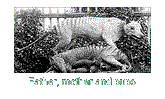
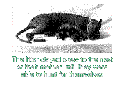

|
Appearance |
Habitat |
Hunting |
Breeding |
Reasons for Extinction |
Sightings |
Breeding
|  |
The Thylacine is a marsupial - an animal that raises its young in a pouch.
One characteristic, which differentiates Thylacines from other marsupials
such as opossums and kangaroos, is that a Thylacine's pouch opens backwards,
giving its young more protection when moving through the bush.
|
|
Thylacines bred once a year, most likely in December. The female
gives birth to approximately four young that are not yet developed.
These tiny babies crept unaided through the mother's belly fur to reach
and cling to a nipple inside her pouch, where they lived until they were
completely developed. By July or August, the young were too big
for the pouch and were left in a sheltered place, such as a small lair
in a rocky den or under a rotting tree, while the mother hunted for
food. Later, the young followed the mother while she hunted.
The litter stayed close to the nest or their mother until they were able
to hunt for themselves. |  |
Appearance |
Habitat |
Hunting |
Breeding |
Reasons for Extinction |
Sightings |
1998 © Gallant Web Design
|